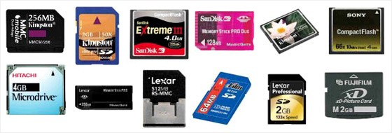

Memory는 디지털 카메라나 디지털 캠코더, 스마트폰과 같은 휴대용 디지털 기기는 기본적으로 콘텐츠(사진, 동영상, 음악 등)를 저장하기 위한 매체가 필요하다. 경우에 따라서는 기기에 내장된 저장 공간에 저장하기도 하지만 대부분 착탈이 가능한 소형 저장 매체인 메모리 카드를 사용하고 있다. 메모리 카드를 사용하면 다른 기기(PC 등)로 콘텐츠를 이동/복사하기 편리하며, 차후에 큰 용량의 메모리 카드로 교체하여 더 많은 콘텐츠를 저장하고자 하는 데도 유리하기 때문이다.
